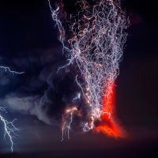

Lightning
A Force of Nature
Crash!
Lightning is a giant spark of electricity in the atmosphere between clouds, the air, or the ground. In the early stages of development, air acts as an insulator between the positive and negative charges in the cloud and between the cloud and the ground. When the opposite charges builds up enough, this insulating capacity of the air breaks down and there is a rapid discharge of electricity that we know as lightning. The flash of lightning temporarily equalizes the charged regions in the atmosphere until the opposite charges build up again.
Sun dogs fire on the horizon
Meteor rain stars across the night
This moment may be brief
But it can be so bright
Reflected in another source of light
When the moment dies
The spark still flies
Reflected in another pair of eyes
Dreams are sometimes catching
Desire goes to my head
Love responds to your invitation
Love responds to imagination
Dreams are sometimes catching
Desire goes to my head
Love responds to your invitation
Love responds to imagination
Neil Peart
9/12/1952 - 1/7/2020
Boom!

Lightning is a huge electrical discharge that results from the rising and sinking air motions that occur in thunderstorms. Lightning can be either connect from one cloud to another, or shoot from a cloud down to the ground. Lighting also has different appearances and is always accompanied by thunder.
Types of cloud-to-ground lightning include staccato, forked, ribbon, and bead lightning
- Staccato lightning is a strike which is a short-duration stroke that often, but not always, appears as a single very bright flash and often has considerable branching.
- Forked lightning is a name, not in formal usage, for cloud-to-ground lightning that exhibits branching of its path.
- Ribbon lightning occurs in thunderstorms with high cross winds and multiple strokes. The wind will blow each successive stroke slightly to one side of the previous stroke, causing a ribbon appearance.
- Bead lightning appears to break up into a string of short, bright sections. It is relatively rare.